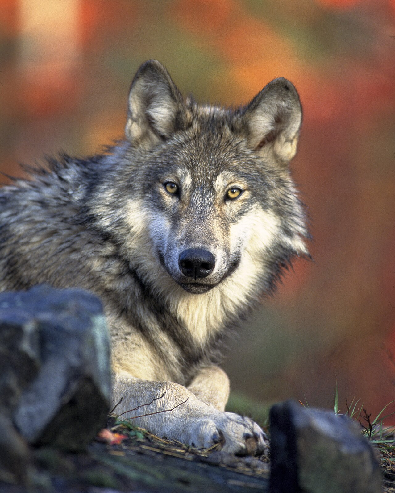
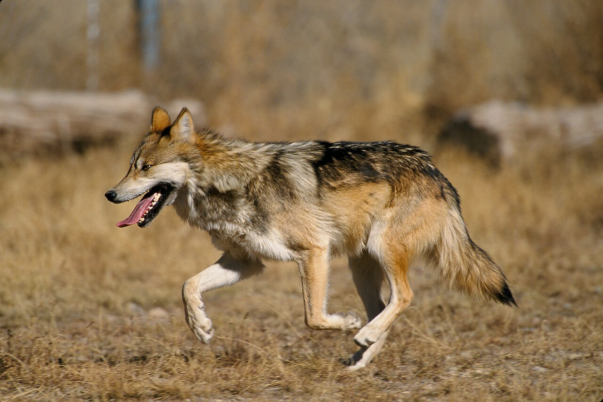

🖼️ Image Gallery
Six wolves, six moments — pulled from public-domain wildlife archives

In the Snow, Under the Firs
A gray wolf in fresh winter coat. Their double-layered fur traps body heat at -40 °F.
USFWS · Public domain
Eye Contact, No Apologies
Direct gaze in the wild signals confidence. Wolves recognize individuals by face and voice.
USFWS · Public domain
Mexican Wolf, Full Stride
The "lobo" — smallest North American subspecies. Recovering in Arizona and New Mexico.
USFWS · Public domain
Resting Between Hunts
Wolves sleep 8–10 hours a day in short bouts — there's almost always a sentry awake.
USFWS · Public domain
Arctic Wolf, Curled In
White-coated subspecies of the Canadian high Arctic and Greenland. Tail tucks over the nose for warmth.
Wikimedia · Public domain
Black Coat, Yellowstone Meadow
Black coloration in North American wolves traces to a single gene introduced by ancient dog ancestors.
Wikimedia · Public domainGot a wolf shot you're proud of? Send it in via our Google Form submission — we feature reader photos in this gallery with full credit. Real photos only, please.